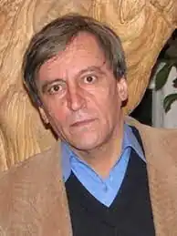

Народився в сім'ї вчителів. Батько був в'язнем трьох концтаборів, включаючи Бухенвальд.
Станіслав Бондаренко змалку зацікавився справжньою, а не офіційною історією України.
З шостого класу навчався в Республіканській спеціалізованій середній школі-інтернаті спортивного профілю (РСШІ СП) в Києві, яка була базовою для юнацьких збірних України з різних видів спорту. Їздив у складі юнацької збірної України з футболу до Угорщини, де став кращим бомбардиром. Викрив аферу тренерів, які привласнили більше 10 тисяч радянських рублів (добові всієї збірної). Після цього футбольну кар'єру був змушений припинити. Закінчив філологічний факультет Київського державного університету ім. Т. Г. Шевченка (1976—1981). В роки навчання мав проблеми з КДБ через організацію самвидаву — більше року випускав з однокурсниками студентський журнал і був обраний президентом створеної студентами двох факультетів Академії Гаруму, куди входили шість студентів-академіків, а журнал читався в кількох вишах. Два роки служив у Збройних силах. Півтора року працював учителем літератури й мови в Ірпінській СШ № 2. В кінці 1982 був запрошений і перейшов працювати у газету "Вечірній Київ" на посаду кореспондента. У 1989—1990 після трагедії на ЧАЕС протягом 12 місяців керував бетономішалкою при будівництві міста енергетиків Славутича, його Тбіліського кварталу. Був премійований Радою Міністрів Грузії автомобілем "Жигулі". З 1990 — на журналістській роботі в газетах "Київський вісник", "Нєзавісімость", "Київські відомості". В газеті "Літературна Україна" працював заступником головного редактора, У 2015—2017 рр. — головний редактор цієї газети. Автор 25 книг загальним накладом понад мільйон примірників. Серед книг: "Струмок" (1989), у видавництві "Веселка", наклад 100 000 "Чайка Нескучайка" (1992), у видавництві "Веселка", наклад 200 000 "Нічна розмова з Європою", видана французькою мовою в Парижі "Я сам із дат печалі", "Бенкет під час Кучми", "Нова Енеїда, або Дер-жа-вю", "Євангеліє від тюрми", "Кирилиця київських вулиць", "Пікнік із мільярдером" та інші. Автор двох перших у світі романів-паліндромів, за один з яких "Ніша Волошина" ("Волошин — нішолов") отримав Волошинську премію. Прозовий роман "От я вся — я свято, або Віхолалохів" витримав два видання, ввійшов до короткого спису "Книжки року Бі-Бі-Сі" й також був відзначений на "Коронації слова" (2009). Книга поем "Майдани і Магнати" номінувалася на Національну премію імені Т. Г. Шевченка.